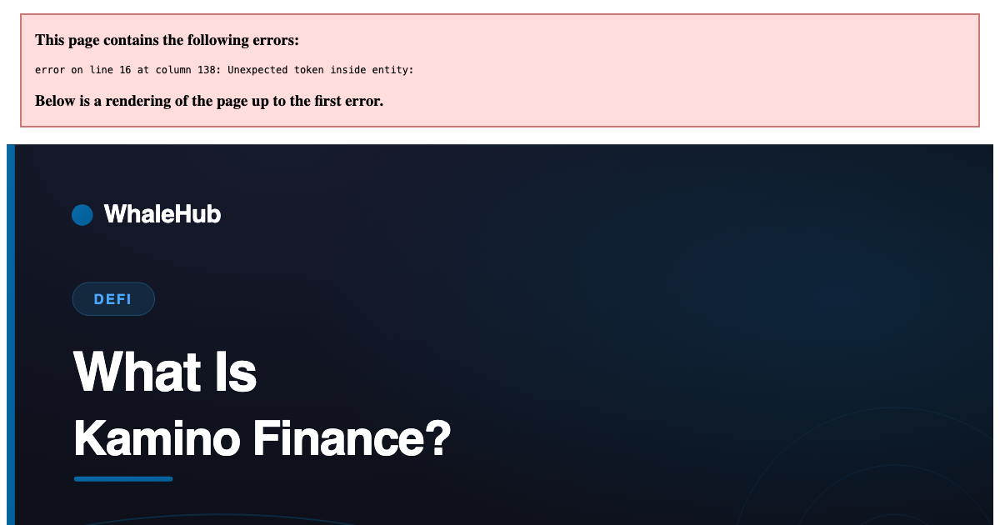

What Is Kamino Finance? Solana's Lending and Liquidity Layer

Kamino Finance is a DeFi protocol on Solana that does three things: it runs automated liquidity positions on Solana DEXes, it operates a lending market called K-Lend, and it stacks leverage on top of both. The common thread is automation — positions that would otherwise need constant manual attention are managed by the protocol.
Providing concentrated liquidity on a modern DEX is a job, not a deposit: you pick a price range, and when the market leaves it you stop earning until you move. Kamino automates that. It then adds a lending market so those positions can be borrowed against, and leverage products that do the borrowing for you. Each layer adds return and a distinct new way to lose money.
Liquidity vaults
Concentrated liquidity lets an LP commit capital to a chosen price range, earning far more fees per dollar inside that range and nothing outside it. The catch is that the market moves. Kamino's vaults hold the position and rebalance the range automatically according to a published strategy.
What you gain is not having to watch a chart to keep earning. What you give up is more subtle and worth understanding before depositing:
- Rebalancing realises losses. Moving a range after the price has moved locks in the divergence. Automation does not avoid impermanent loss — it converts it from an unrealised position into a realised one, repeatedly.
- You inherit the strategy. Range width, rebalance frequency and triggers are decisions someone else made. A wide range earns less and rebalances rarely; a tight one earns more and churns. Read which you are buying.
- Fees compound quietly. Earned fees are typically reinvested rather than claimable, which is efficient but means your headline balance moves for two different reasons at once.
K-Lend
An ordinary over-collateralised lending market, with the usual shape: suppliers deposit assets and earn interest, borrowers post collateral worth more than they borrow, and rates move with utilisation. If collateral value falls toward the loan, the position is liquidated automatically.
The feature that distinguishes it is accepting Kamino's own vault positions as collateral, so a liquidity position can back a loan without being closed. Convenient, and it also means a single adverse move can hit both the collateral's value and its fee income simultaneously. We unpack the mechanics in Kamino Lend explained.
Leverage products
Multiply-style products automate a loop that users used to run by hand: deposit, borrow against it, buy more of the deposit asset, repeat. The protocol executes the loop in one transaction and manages the resulting position.
This is the highest-risk product on the platform and the arithmetic deserves stating plainly. Leverage multiplies the return and the drawdown, and it compresses the distance to liquidation. A position that survives a 40% fall unleveraged may liquidate on a 15% fall at 3×. Automation makes the loop convenient; it does not make it safe, and convenience at the point of entry is not a substitute for understanding the exit.
Where the yield comes from
Three sources, all ordinary: DEX trading fees, borrower interest, and token incentives. Anything beyond what those can fund is either leverage or an undisclosed risk.
| Source | Paid by | Sustainable? |
|---|---|---|
| DEX trading fees | Traders swapping in the pool | Yes — scales with real volume |
| Borrower interest | Borrowers in K-Lend | Yes — scales with real demand |
| Token incentives | Emissions, diluting holders | No — a budget, not a business |
The distinction matters most when comparing advertised rates. A vault paying a high headline number largely from emissions is paying you in a token whose supply is increasing; the rate will fall when the programme ends. That is not deceptive if disclosed, but it is a different proposition from fee income, and the two should not be compared as if they were the same number.
The risks, by product
- Smart contract risk — applies to everything. Kamino has operated at scale and been audited, which reduces but does not remove it.
- Impermanent loss — vaults only. Realised on each rebalance rather than deferred to exit.
- Liquidation — lending and leverage. Automated, unsentimental, and fastest exactly when markets are worst.
- Oracle risk — lending and leverage. Collateral is priced by an oracle; a bad print can liquidate a healthy position.
- Chain risk — Solana has historically had congestion and outage episodes. Being unable to transact during volatility is a real risk for leveraged positions specifically.
- Price risk — the largest and least discussed. Earning 12% on an asset that falls 40% is a 28% loss.
Who it suits
Kamino suits someone already committed to Solana who wants managed liquidity positions rather than manual ones, and understands that automation removes the labour, not the exposure. Depositors who want yield without liquidity-provision risk should look at plain lending or staking instead — a comparison we draw in What is crypto staking.
Frequently asked questions
What is Kamino Finance?
Kamino Finance is a DeFi protocol on Solana that bundles three related products: automated concentrated-liquidity vaults that manage LP positions on Solana DEXes, a lending market known as K-Lend, and leveraged strategies built on top of both. The unifying idea is that positions which normally require active management are run by the protocol instead.
How does Kamino make money for depositors?
From three ordinary sources. Liquidity vaults earn DEX trading fees, plus whatever incentive tokens the pool emits. K-Lend pays suppliers the interest borrowers pay. Leveraged strategies amplify one of those by borrowing against the position. There is no fourth source, and any advertised return has to be explainable by one of these.
What are Kamino vaults?
Automated liquidity vaults. On a concentrated-liquidity DEX an LP must choose a price range and move it as the market moves, or stop earning fees. Kamino's vaults rebalance that range automatically according to a published strategy, so depositors get a managed position instead of a manual one. The trade-off is that rebalancing crystallises impermanent loss and you inherit the strategy's judgement.
Is Kamino the same as Aave?
No. They overlap on lending but differ in scope. Aave is a lending market and little else, deployed across many chains. Kamino is Solana-native and combines lending with automated liquidity management and leverage products, so depositors take on liquidity-provision risk that a pure lending market does not have.
What is the KMNO token?
KMNO is Kamino's governance token, used for protocol governance and distributed through incentive programmes including its points and season campaigns. Governance tokens are not a claim on protocol revenue unless the protocol explicitly makes them one, so treat KMNO's value and any yield paid in it separately from the underlying product's economics.
Do you need SOL to use Kamino?
Yes, for transaction fees. Solana fees are very low, but you need a small SOL balance in your wallet to sign transactions, and you should keep some in reserve — being unable to pay fees when you need to adjust or close a leveraged position is an avoidable way to get liquidated.
WhaleHub is a yield-optimization protocol on Stellar. We stake AQUA, aggregate ICE voting power, and auto-compound Aquarius rewards for stakers. This series explains the Stellar DeFi stack — and the wider market around it — in plain English.
Same idea, different chain
WhaleHub pools governance power on Stellar and pays out the revenue it earns. Non-custodial, no lockup on BLUB.
Launch the appThis article is for educational and informational purposes only and is general information, not financial advice. WhaleHub is not affiliated with any protocol described. Protocol mechanics, rates and token designs change frequently — verify current details directly with the protocol before depositing. DeFi involves risk, including smart-contract failure, liquidation and the total loss of capital.